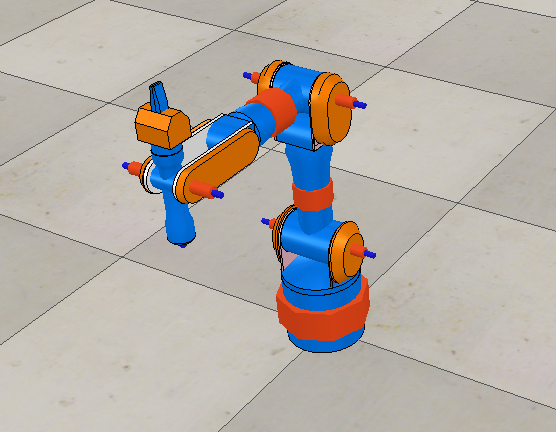

Week14
本週進度為V-REP的操作練習
進入mde.tw >cpdgx >右邊的 課程專題>電腦輔助設計議題>參考連結裡的第一個網址
點進去後會看到一篇令人頭疼的英文操作教學
↓↓↓就讓我們來看看這篇再說什麼吧↓↓↓
操作步驟 :
1.點選 [Menu bar --> File --> Import --> Mesh...]，開啟名為"redundantManipulator.stl"的檔案
2.開啟後會發現點擊機械手臂時，機械手臂為一個整體，各部位零件是無法單一選取的，因此為了方便後續操作須先將此手臂"分解"
點選[Menu bar --> Edit --> Grouping/Merging --> Divide selected shapes]及完成。
3.接下來可以依照自己喜好設定機械手臂的外觀顏色，雙擊所要更改的零件，點選"Adjust color"
4.設定完顏色之後，我們要來將各零件與絕對參考框架對齊，選取全部零件後，點選[Menu bar --> Edit --> Bounding box alignment --> Align selected shapes' coordinate frame with world]
5.再來便是新增7個旋轉軸，點選[Menu bar --> Add --> Joint --> Revolute]將呼叫出之旋轉軸位置設定在(0，0，0)，ctrl選取機械手臂的基座與旋轉軸打開position dialog裡的position，點選Apply to selection，便成功將第一個旋轉軸定位，總共為七個轉軸，重複此步驟即可，另外，有些轉軸的方向是錯誤的，開啟orientation dialog 裡面的orientation，將轉軸轉至正確方向。
6.調整轉軸長度及直徑
7.最一開始我們分解了我有零件，現在我們則要將部分零件組合成為一個零件，便是圖中更改顏色的部分，每部分有五個零件，將之選取，點選[Menu bar --> Edit --> Grouping/Merging --> Group selected shapes]，重複此步驟直至四部份的零件都組合在一起，另外桿臂的部分則是由[Menu bar --> Edit --> Grouping/Merging --> Merge selected shapes]方法組合。
(目前研究進度到這邊，之後會再把進度補上，並完成)
------------------------------------------------------------------------------------------
12/21 更新
8.將零碎的零件組合成小部件，總共會有七個，重新命名為"redundantRob_link1~redundantRob_link7"
七個旋轉軸則命名為"redundantRob_joint1~redundantRob_joint7"
並將左方欄位支連件順序以一個部件接一個旋轉軸的方式組合，如下圖

先附上半完成圖

Week13 << Previous Next >> Onshpae